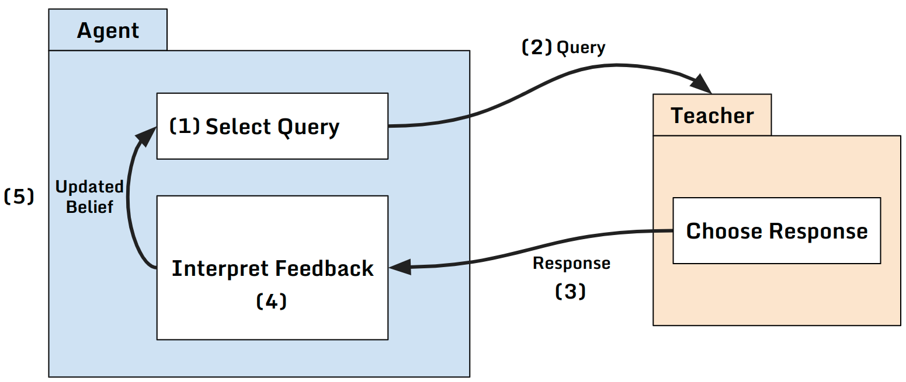

|
Hi! I’m Pat, and I’m a PhD student in the Robotics Institute at Carnegie Mellon University where I have the good fortune of being co-advised by Professors Henny Admoni and Reid Simmons. Prior to becoming a PhD student, I was a Master's student in the RI. During that time, I was co-advised by Professors Henny Admoni and Oliver Kroemer. Before enrolling at CMU, I worked on the navigation and planning software for MoonRanger under Professors Red Whittaker and David Wettergreen, and I also worked on the Iris (originally CubeRover) project's Systems Engineering team. Before robotics, I taught 9th grade Humanities and coached boys' lacrosse and ice hockey at Culver Academies. I earned a dual degree in English and Economics from the University of Virginia. Email / CV / Google Scholar |
{kind=link}
ResearchThese days, I'm especially interested in figuring out how robot learners can help make people more efficacious teachers of skills and personal preferences. In particular, I am working on ways to:
|
|

|
Patrick Callaghan. Carnegie Mellon University, 2023 Document My Master's of Science in Robotics (MSR) work investigated different interaction types and reward functions for representing human preferences. |

|
Tesca Fitzgerald, Pallavi Koppol, Patrick Callaghan, Russell Q. Wong, Reid Simmons, Oliver Kroemer, Henny Admoni. Conference on Robot Learning, 2022 Github / Paper We studied how an interactive agent might actively select from multiple forms of human-provided feedback to learn a human's preferences. |

|
Jordan Ford, Patrick Callaghan, Uland Wong, Heather Jones, Chuck Whittaker, William "Red" Whittaker. International Planetary Caves Conference, 2020 Paper We went to the desert and collected data to model the moon's massive pits (which might one day serve as outposts for astronauts). |
|
Thanks to Jon Barron for making his website's
source code
available to the rest of us!
|